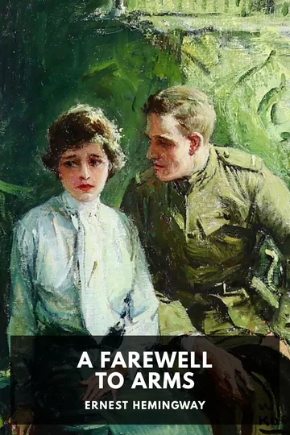
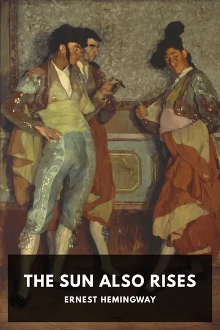
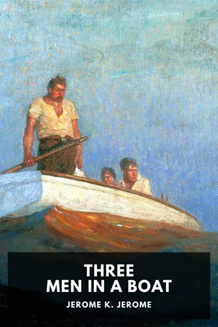
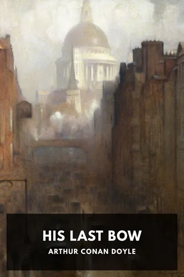
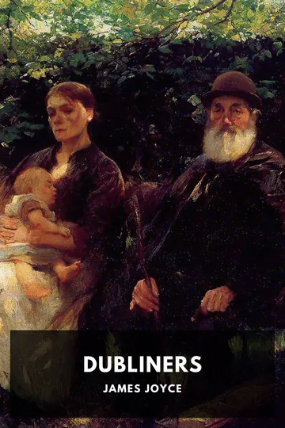
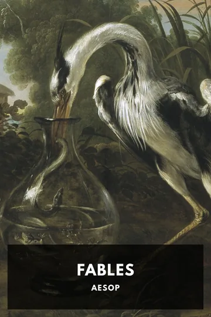
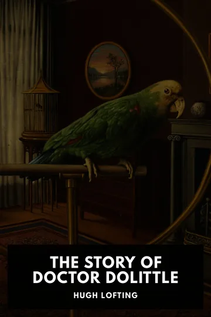
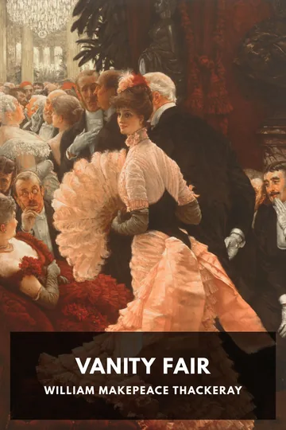
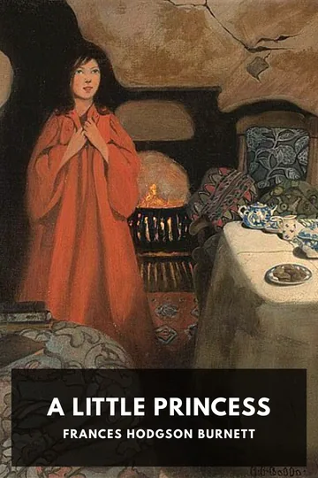
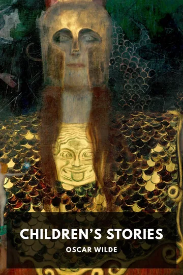

Frankenstein
Reading time: 4 h 44 min
A tragic scientist creates a monster in his laboratory.
All 161 classics in one place, every one of them free. Search by title, author or genre.
Go on, pick three
Showing all 161 books.
Reading time: 4 h 44 min
A tragic scientist creates a monster in his laboratory.

Reading time: 7 h 24 min
A Regency-era novel of manners in which five women try to adjust to their new neighbor, an eligible gentleman.

Reading time: 9 h 46 min
An ancient undead monster terrorizes Victorian London.

Reading time: 27 h 59 min
A man seeks revenge for having been falsely imprisoned years earlier.

Reading time: 12 h 49 min
Captain Ahab, having lost his leg to the white whale Moby Dick, travels the world on a quest for vengeance.

Reading time: 1 h 38 min
A young girl follows a white rabbit into a strange land of poetry, humor, and whimsy.

Reading time: 2 h 46 min
The personal diary of the Roman Emperor, in which he lays out his thoughts and philosophical musings on the Stoic philosophy and way of life.

Reading time: 12 h 22 min
Inflated by his own ambition, an ex-student murders a pawnbroker, then faces the inevitable consequences.

Reading time: 11 h 20 min
A woman is hired by the mysterious master of Thornfield Hall as a governess for his young ward.

Reading time: 4 h 48 min
A Victorian dandy turns to a life of debauchery after a magical portrait stops him from aging.

Reading time: 2 h 57 min
The decadent and mysterious Jay Gatsby pursues the American Dream in Jazz Age New York.

Reading time: 6 h 21 min
The world’s first consulting detective investigates a variety of intriguing cases in the first Holmes short story collection.

Reading time: 1 h 58 min
A mysterious inventor travels to a land far off in time.

Reading time: 1 h 34 min
A London lawyer investigates the relationship between a brilliant scientist and a misshapen misanthrope.

Reading time: 7 h 15 min
An epic poem following a Greek hero trying to return home after the Trojan war.

Reading time: 21 h 13 min
A dispute over inheritance between father and son escalates into a family feud.

Reading time: 7 h 4 min
An adopted child ends up tearing apart families in a quest for power and revenge.

Reading time: 7 h 14 min
Two sisters take long journeys to love in early nineteenth-century England.

Reading time: 2 h 38 min
The self-declared world’s first consulting detective unravels a mysterious case of murder and revenge.

Reading time: 1 h 28 min
An ancient Chinese classic discussing the art of war.

Reading time: 19 h 17 min
In the neighborhood of a rural English town in the 1830s, several men and women struggle with love, marriage and fortune.

Reading time: 19 h 17 min
A collection of Edgar Allan Poe’s short fiction, ordered by date of publication.

Reading time: 4 h 9 min
A young boy finds adventure on the high seas as he battles bloodthirsty pirates in search of a long-lost treasure.

Reading time: 4 h 14 min
Over the course of a day—and again another day ten years later—the Ramsays and their friends plan a boating trip to the nearby lighthouse.

Reading time: 3 h 36 min
A famous detective investigates a mysterious and apparently supernatural threat to the heir of a wealthy Dartmoor estate.

Reading time: 11 h 15 min
An orphan boy living in Victorian England begins his life in extreme poverty and goes on to experience good fortune, love, rejection, wealth, and social challenges as he grows into adulthood.

Reading time: 2 h 8 min
The classic treatise on how to tyrannize one’s subjects.

Reading time: 1 h 32 min
One of the fundamental texts of the Tao philosophy and religion.

Reading time: 9 h 42 min
A wealthy young woman decides to take on the role of patroness and matchmaker to a young protégé, with considerably less than successful results.

Reading time: 6 h 28 min
Thoreau’s report on his social experiment of solitude, simplicity, and self-reliance.

Reading time: 3 h 39 min
The first-person narrative of the Martian invasion of 19th-century Earth.

Reading time: 25 h 44 min
A mad knight-errant and his down-to-earth squire encounter adventure in the Spanish countryside.

Reading time: 21 h 14 min
A socialite starts an affair with a cavalry officer, against a backdrop of wealthy family life in Imperialist Russia.

Reading time: 4 h 22 min
Ten short stories of madness, hauntings, romance, and art.

Reading time: 11 h 18 min
The story of how four young sisters grow to adulthood.
Reading time: 8 h 16 min
A family is reunited, added to, and then threatened to be torn apart by events arising from the French Revolution.

Reading time: 5 h 3 min
A young woman meets again with a lover whose marriage proposal she had been persuaded to reject several years ago.

Reading time: 2 h 20 min
A steamer captain in the heart of Africa witnesses the final days of a brutal ivory trader.

Reading time: 72 h 54 min
A collection of Plato’s dialogues.

Reading time: 2 h 24 min
The adventures of a young farm girl named Dorothy in the magical Land of Oz, after she and her pet dog Toto are swept away from their Kansas home by a cyclone.

Reading time: 2 h 40 min
A man living alone in St. Petersburg writes memoirs describing his alienation from modern society.

Reading time: 1 h 56 min
The ghost of the King of Denmark tells his son, Hamlet, to avenge his death.

Reading time: 6 h 59 min
Dante journeys through Hell, Purgatory, and Heaven in order to receive salvation and to find divine love.

Reading time: 4 h 59 min
A dramatic imagining in blank verse of the rebellion of Satan against God, Satan’s overthrow, and the Fall of Man.

Reading time: 5 h 22 min
An ambulance lieutenant and a field nurse have an affair during World War I.

Reading time: 1 h 45 min
A miserly moneylender is visited by four ghosts who help him see how to honor Christmas in his heart all year round.

Reading time: 23 h 54 min
Adam Smith lays the foundation of classical economics.

Reading time: 1 h 7 min
An ambitious general murders the King of Scotland and takes the throne for himself—and then he must deal with the consequences.

Reading time: 9 h 27 min
The epic poem which follows a Greek warrior who refuses to give up his prize of war.

Reading time: 2 h 58 min
A scientist named Griffin creates a serum to render himself invisible and subsequently descends into madness.

Reading time: 6 h 15 min
A coming-of-age story of a young girl growing up on a farm on Prince Edward Island.

Reading time: 4 h 49 min
A young Elizabethan poet for whom success is elusive becomes a woman and embraces the spirit of the age.

Reading time: 1 h 56 min
The story of a domesticated dog’s return to a primitive state in the late 19th-century Yukon.

Reading time: 6 h 44 min
The adventures of a young boy and his friend, an escaped slave, on the Mississippi river in the Antebellum South.

Reading time: 2 h 37 min
An analytical detective is consulted by a young woman who has received a strange communication regarding her long-missing father and a mysterious treasure.

Reading time: 13 h
The complete U.S. public domain short fiction of horror legend H. P. Lovecraft.

Reading time: 2 h 36 min
A governess moves in to a haunted manor.

Reading time: 4 h 23 min
Prompted by a mysterious Icelandic manuscript, a professor and his nephew, with the aid of a local guide, adventure to the center of the earth through the crater of a dormant volcano.

Reading time: 4 h 55 min
A young girl is moved to the English countryside where she starts restoring a neglected garden, and uncovers secrets in the process.

Reading time: 2 h 26 min
An Antarctic expedition reveals the horrifying reality of ancient myths in the depths of the continent.

Reading time: 4 h 18 min
A young boy growing up in Missouri gets into all sorts of trouble and, with his friend, stumbles on a treasure.

Reading time: 4 h 7 min
An American expatriate socializes in Paris and Spain as one of the Lost Generation.

Reading time: 13 h 56 min
A young Gascon moves to Paris to join the King’s Musketeers where he starts to investigate the kidnapping of his landlord’s wife.

Reading time: 3 h 51 min
Nietzsche’s philosophical treatise on the ambiguity of traditional morality.
Reading time: 3 h 53 min
As Clarissa Dalloway walks through London on a glorious June day, her movements bring together a cast of friends and strangers, each in turn weighing matters of mind and heart.

Reading time: 4 h 4 min
A detective becomes embroiled in a series of murders and intrigues, all seemingly related to a mysterious figurine.
Reading time: 9 h 34 min
A poor boy, born and raised in a workhouse in Victorian England, falls into the control of a gang of heartless criminals.

Reading time: 5 h 48 min
The world’s first consulting detective and his companion investigate further crimes and mysteries, culminating in a life-or-death struggle with an evil nemesis.

Reading time: 2 h 23 min
A man embarks on a spiritual journey through India.

Reading time: 6 h 19 min
An Englishman travels to fictional islands where he meets tiny people, giants, magicians and talking horses.

Reading time: 1 h 49 min
In a follow-up to her adventures in Wonderland, Alice finds herself in a mirror image of the whimsical land where she becomes a queen in her own right.
Reading time: 4 h 42 min
A young girl with an overactive imagination comes of age.
Reading time: 3 h 49 min
On a bet, an eccentric Victorian gentleman races to circumnavigate the globe.

Reading time: 7 h 22 min
Epictetus instructs his students how to live the life of a Stoic.

Reading time: 1 h 23 min
A father tells stories to his son about the son’s stuffed animals come to life.

Reading time: 3 h 34 min
Four animals adventure through the bucolic English countryside.

Reading time: 6 h 49 min
The world’s first consulting detective returns to London after having faked his death some years before, and investigates a series of baffling mysteries.

Reading time: 1 h 15 min
A comedy skewering Victorian high society.
Reading time: 5 h 6 min
A woman in the Puritan Massachusetts Bay Colony is forced to wear the shame of her sin embroidered on her clothes.

Reading time: 22 h 5 min
A collection of J. Sheridan Le Fanu’s short fiction, including some of his famous ghost stories, gothic horror and sensation.

Reading time: 4 h 37 min
A team of scientists and adventurers explores a prehistoric land.
Reading time: 5 h 31 min
After ten years spent in solitude, Zarathustra goes back amongst men to share his accumulated wisdom and prepare humanity for the Overman.

Reading time: 1 h 34 min
The children of two opposing houses fall in love.

Reading time: 15 h
A young drawing teacher falls in love with his aristocratic pupil, who falls victim to a devious plot to acquire her considerable fortune.

Reading time: 3 h 6 min
Seven fable-like tales about jungle animals in India and the humans who live on the edges of their realm.

Reading time: 3 h 31 min
The final novel in Sir Arthur Conan Doyle’s Sherlock Holmes series follows the eponymous hero as he investigates a Sussex murder seemingly connected with a secret society.
Reading time: 7 h 21 min
Shipwrecked on a remote tropical island, a resourceful Englishman manages to survive alone for many years.

Reading time: 3 h 55 min
Benjamin Franklin writes about his youth, adventures, and achievements.

Reading time: 4 h 4 min
The humorous travelogue of a boating holiday down the Thames taken by three friends and their dog.

Reading time: 45 min
A collection of prose poetry on themes such as love, beauty, and religion.

Reading time: 57 min
A collection of Edgar Allan Poe’s poetry.

Reading time: 3 h 36 min
The world’s first consulting detective and his faithful biographer tackle more mysterious cases.
Reading time: 6 h 11 min
Upper-class New York gentleman Newland Archer is set to wed May Welland in a picture-perfect union, until the bride’s disgraced cousin returns from overseas and threatens to draw his love away.

Reading time: 12 h 8 min
A distinguished amateur scientist lays out the evidence for the origin of species by means of natural selection.

Reading time: 2 h 39 min
A shipwrecked man is rescued by a boat and left on a strange island owned by a physiologist who experiments in vivisection.

Reading time: 4 h 6 min
Fifteen short stories about middle-class life in early 20th-century Dublin.

Reading time: 2 h 2 min
A square is pulled out of his reality by a sphere, and shown the meaning of three dimensions.

Reading time: 4 h 4 min
An adventurer finds himself battling alien civilizations on the strange surface of Mars.

Reading time: 9 h 5 min
A young woman of poor and uneducated parents is driven by guilt to try to redeem her family’s fortunes.

Reading time: 10 h 35 min
A collection of Robert E. Howard’s short stories featuring Conan the Barbarian.

Reading time: 3 h 5 min
Mill’s famous essay that applies a utilitarian ethical system to systems of government.
Reading time: 54 h 14 min
A collection of O. Henry short stories, ordered by date of publication.
Reading time: 4 h 59 min
A mysterious presence terrorizes the Paris Opera.

Reading time: 1 h 41 min
An aging king divides his kingdom between his two eldest daughters, slighting the third, and comes to bitterly regret his decision.

Reading time: 2 h 30 min
An expatriate returning to England after many years in South Africa is accused of a murder he did not commit, and has to flee from the police and other more dangerous pursuers.
Reading time: 48 h
A collection of Chekhov’s short stories and novellas ordered by date of publication.

Reading time: 7 h 57 min
The definitive collection of Walt Whitman’s poetry.

Reading time: 7 h 1 min
A middle-class country wife tries to satisfy her yearnings for a luxurious life by engaging in various affairs.

Reading time: 1 h 42 min
Jealousy destroys the marriage between an older black man and a younger white woman in 1500s Venice.

Reading time: 2 h 24 min
Aesop’s classic Fables of behavior and consequence.

Reading time: 1 h 3 min
This comedy follows four lovers and a thespian who become bewitched by fairies.

Reading time: 8 h 4 min
A collection of Ralph Waldo Emerson’s essays.
Reading time: 2 h 3 min
A witty satire that tells of the young Candide’s attempts to stay optimistic through a series of incredible hardships.

Reading time: 1 h 35 min
A hero is hired to kill a monster that has been plaguing the land.
Reading time: 4 h 23 min
A wild half-wolf survives a harsh existence before finding love and domestication in civilization.

Reading time: 4 h 32 min
A collection of John Donne’s poetry.
Reading time: 3 h 38 min
A memoir narrated by a horse whose idyllic time on an English farm prepares him for a life filled with constant change and varied circumstances.
Reading time: 4 h 48 min
Amateur detective and Catholic priest Father Brown solves mysteries in this first collection of Father Brown short stories.

Reading time: 18 h 24 min
A collection of short stories by H. G. Wells in a variety of genres ordered by date of publication.

Reading time: 3 h 2 min
A woman’s dawning realisation of her situation leads to a struggle for independence.
Reading time: 10 h 8 min
When a mysterious young widow arrives in a small rural area, gossip blackens her name before her true story is eventually discovered by a male admirer.
Reading time: 3 h 53 min
A thousand years in the future, the builder of a spaceship discovers his emotions.
Reading time: 2 h 52 min
A mischievous and cocky young boy, Peter Pan, takes Wendy and her brothers on adventures on a fantasy island consisting of mermaids, pirates, Native Americans, and fairies.
Reading time: 7 h 11 min
An engineer from 19th-century Connecticut is sent back in time to King Arthur’s medieval England.
Reading time: 3 h 31 min
An undercover policeman infiltrates a mysterious Anarchist group.
Reading time: 4 h 13 min
The people of Erl want magic, and get their wish.
Reading time: 11 h 3 min
A young woman faces grave personal challenges when her family moves from a rural parish in the New Forest to the industrial North of England.

Reading time: 1 h 32 min
A kindhearted doctor who can speak the language of animals embarks on a whimsical adventure to Africa.
Reading time: 3 h 42 min
A space traveler accidentally finds himself on Venus and must learn the local customs to survive.

Reading time: 1 h 28 min
A knight accepts a supernatural challenge and faces tests of honesty, loyalty, and honor.

Reading time: 18 h 26 min
A domestic satire set in England before the backdrop of the Napoleonic Wars.
Reading time: 14 h 4 min
A young American woman travelling through Europe excites both admiration and intrigue.
Reading time: 11 h 54 min
When a fabulous gem mysteriously goes missing, suspicion abounds and a hunt begins for the guilty party.

Reading time: 1 h 4 min
A magic-induced tempest shipwrecks the king of Naples and his crew on an island inhabited by the usurped duke of Milan.
Reading time: 3 h 6 min
An account of the terrifying metaphysical haunting of a recluse’s secluded home.
Reading time: 10 h 38 min
Love and war in future Europe are thrown into confusion by a global pandemic that obliterates humanity.
Reading time: 4 h 57 min
Allan Quatermain leads a group of adventurers into an unknown region of Africa in a search for fame and glory.
Reading time: 2 h 32 min
A Roman statesman awaiting execution is visited by the personification of philosophy.

Reading time: 12 h 2 min
Darwin’s personal account of his 1831 voyage around the world investigating the geology, botany, and zoology of various lands.

Reading time: 4 h 5 min
A young girl discovers a life of unexpected challenges when she goes to live at a London boarding school.
Reading time: 9 h 24 min
A philospher and psychologist surveys direct religious experiences, including healthy-mindedness, saintliness, conversion and mysticism.
Reading time: 3 h 51 min
A collection of poems by W. B. Yeats.
Reading time: 5 h 42 min
A collection of John Keats’ published poems, and a selection of unpublished fragments and posthumous verse.
Reading time: 8 h 55 min
A promising young man’s life is marred by failure, tragedy, and loss.
Reading time: 21 h 8 min
A late Middle Ages version of the story of King Arthur and the Knights of the Round Table.

Reading time: 3 h
A collection of Oscar Wilde’s children’s stories.
Reading time: 9 h 49 min
Five Americans, balloon-wrecked on a deserted island, must find a way to survive while revealing the island’s strange mysteries.

Reading time: 4 h 12 min
A young woman throws off the constraints of her dreary existence when she learns she has one year left to live.

Reading time: 4 h 11 min
A seminal collection of essays on the African-American experience.

Reading time: 5 h 3 min
Wollstonecraft argues for equal treatment of women in society, especially in matters of education.

Reading time: 2 h 27 min
Frederick Douglass describes his youth as a slave in Maryland and his desire to be a free man.

Reading time: 4 h 5 min
When a wealthy Bengali woman’s husband invites an anti-British activist to their home, she becomes devoted to the nationalist cause, leading to disharmony in the household.

Reading time: 4 h 39 min
The autobiography of Booker T. Washington, former slave and founder of the Tuskegee Institute.

Reading time: 53 min
Prose poems of offering translated by the author from the original Bengali.

Reading time: 5 h 16 min
A philosopher and political activist presents a forceful argument in favor of the principles of the French Revolution and of republicanism in general, together with a condemnation of monarchy and hereditary power in general.

Reading time: 3 h 30 min
Autobiographical sketches from the Bengali writer, poet, and artist Rabindranath Tagore.

Reading time: 30 min
Bright, singing poems of Indian life by the poet known as the Nightingale of India.

Reading time: 1 h 22 min
Old Indian legends retold in English verse by a Bengali poet who died at 21.

Reading time: 1 h 16 min
The Bhagavad Gita in English verse: Krishna and Arjuna on the field of battle.

Reading time: 4 h 4 min
The great Sanskrit poet’s plays and poems, led by the love story of Shakuntala and King Dushyanta.

Reading time: 2 h 25 min
A king carries a talkative goblin through the night, who tells him riddle stories he must answer.
No books match. Try another word, or clear the filters.